Same kit as ../social-kit/ with the added three-bar mark removed — just the default
wordmark, green kept. Use while the mark is being confirmed. Draft & stage only. Field-by-field
instructions in UPLOAD-GUIDE.md. Note the avatars: the wordmark has no square form, so it reads well
at the sizes a profile picture is shown and gets small very small — the square mark that fixes
that is what is pending sign-off.
Profile pictures & logo (one artwork — upload the file named for the platform)
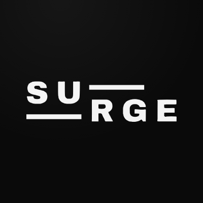
surge-wm-avatar-linkedin-400.pngLinkedIn (Surge company page)400x400px · Admin view › Edit page › Page logo. Square, min 268px.surge-wm-avatar-facebook-500.pngFacebook (Surge page)500x500px · Settings › Page details › Profile picture. Circle crop.
surge-wm-avatar-nextdoor-1200.pngNextdoor (Surge business page)1200x1200px · Business page › Edit › Business logo / profile photo. Circle crop.surge-wm-avatar-youtube-800.pngYouTube (Surge channel)800x800px · Customise channel › Branding › Picture. Min 98px, 4MB max.surge-wm-logo-google-720.pngGoogle Business Profile (Surge)720x720px · Photos › Logo. Google recommends exactly 720×720; min 250×250.surge-wm-avatar-master-1024.png— master —1024x1024px · Fallback for any field not listed. Downscale as needed.
Banners / cover images
surge-wm-banner-linkedin-company-1128x191.pngLinkedIn (Surge company page)1128x191px · Admin view › Edit page › Cover image. 1128×191. Wordmark centred, clear of the lower-left logo tile.surge-wm-banner-linkedin-personal-1584x396.pngLinkedIn (personal profile — optional)1584x396px · Profile › camera on the background strip › Add photo. 1584×396 (4:1).
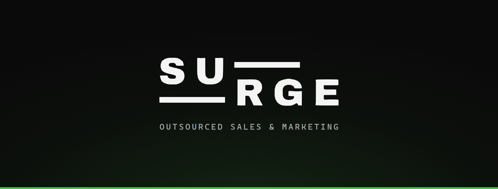
surge-wm-banner-facebook-1640x624.pngFacebook (Surge page)1640x624px · Page › Edit cover photo. Uploads 1640×624; mobile crops toward centre — content is centred.
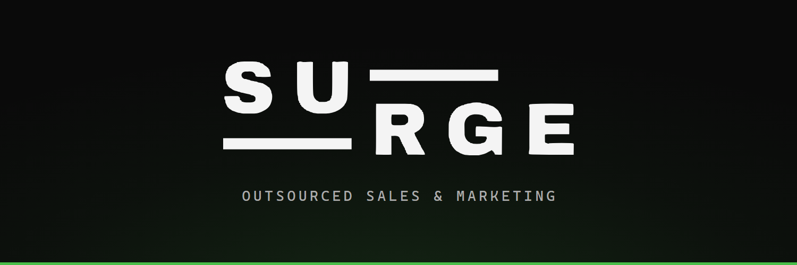
surge-wm-banner-x-1500x500.pngX (Surge)1500x500px · Profile › Edit profile › header photo. 1500×500 (3:1). Lower-left covered by the profile photo.surge-wm-banner-nextdoor-1440x400.pngNextdoor (Surge business page)1440x400px · Business page › Edit › Cover photo. 1440×400 working assumption — confirm the crop box.
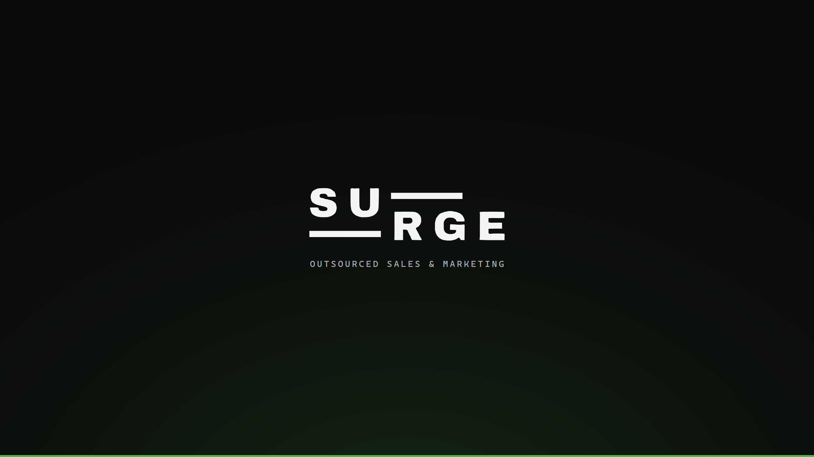
surge-wm-banner-youtube-2560x1440.pngYouTube (Surge channel)2560x1440px · Customise channel › Branding › Banner image. Upload 2560×1440; only the centre 1546×423 is guaranteed on every device.
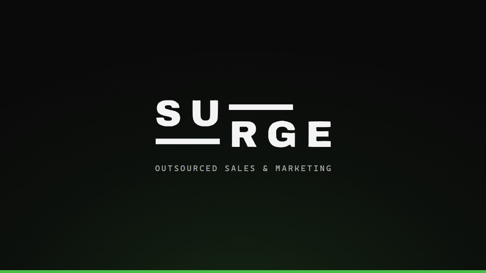
surge-wm-banner-google-1024x576.pngGoogle Business Profile (Surge)1024x576px · Photos › Cover. 16:9.
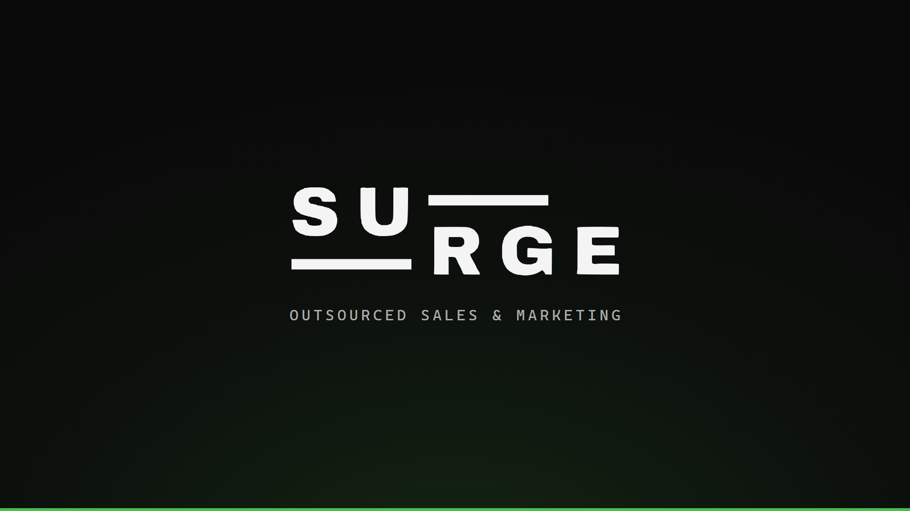
surge-wm-banner-16x9-1920x1080.png— general 16:9 —1920x1080px · Any other 16:9 slot.
Instagram Story Highlight covers (optional)
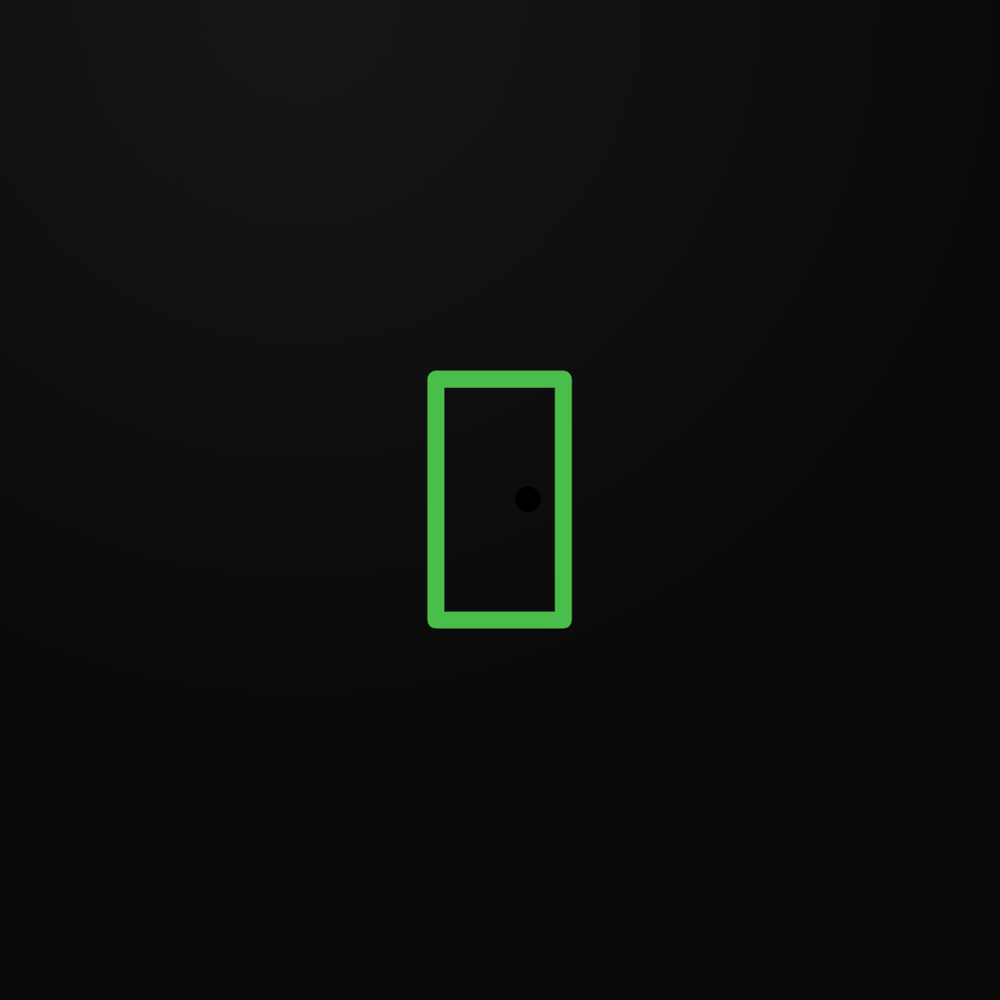
surge-wm-ig-highlight-1-door.pngInstagram (Surge) — Story Highlight cover1080x1080px · Add to a Highlight › Edit › cover. Instagram shows the centre circle only.
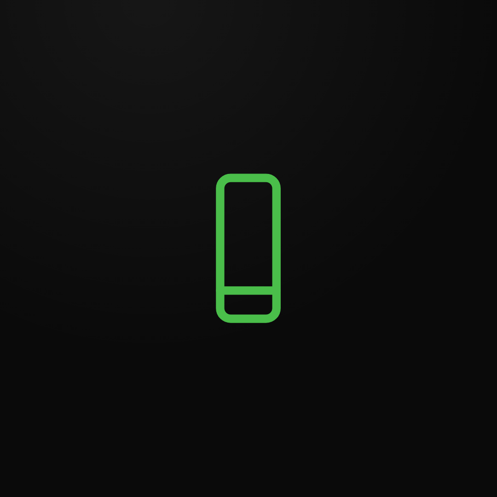
surge-wm-ig-highlight-2-phone.pngInstagram (Surge) — Story Highlight cover1080x1080px · Add to a Highlight › Edit › cover. Instagram shows the centre circle only.
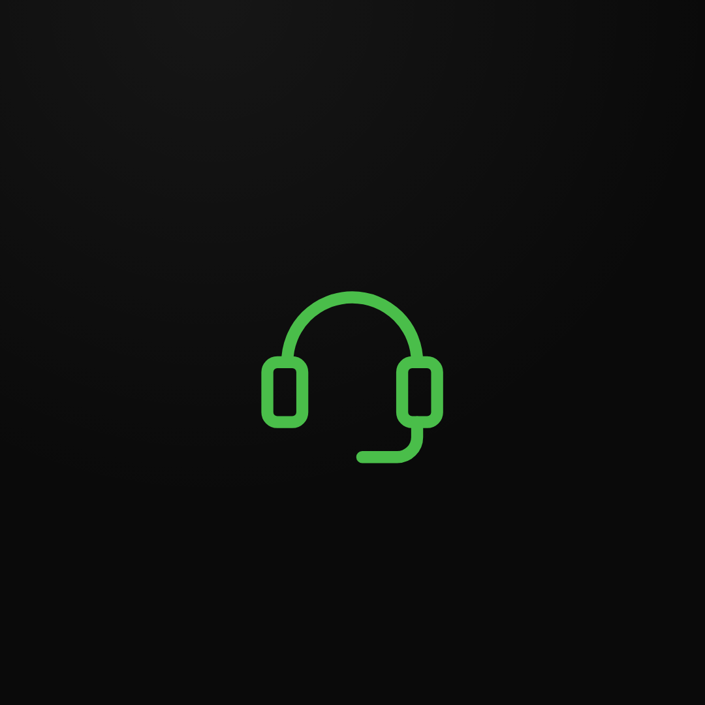
surge-wm-ig-highlight-3-headset.pngInstagram (Surge) — Story Highlight cover1080x1080px · Add to a Highlight › Edit › cover. Instagram shows the centre circle only.
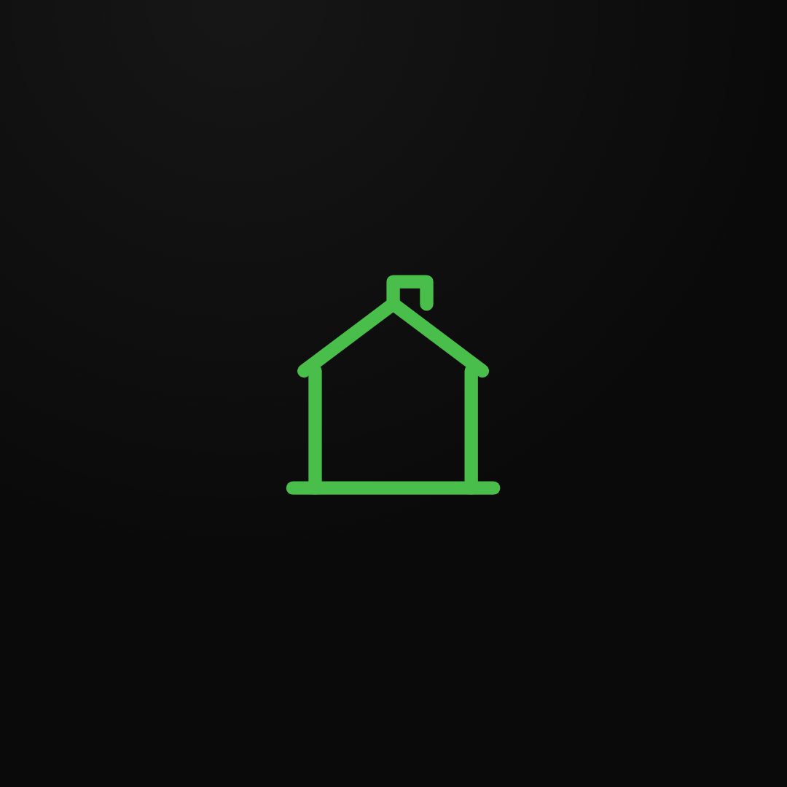
surge-wm-ig-highlight-4-booth.pngInstagram (Surge) — Story Highlight cover1080x1080px · Add to a Highlight › Edit › cover. Instagram shows the centre circle only.
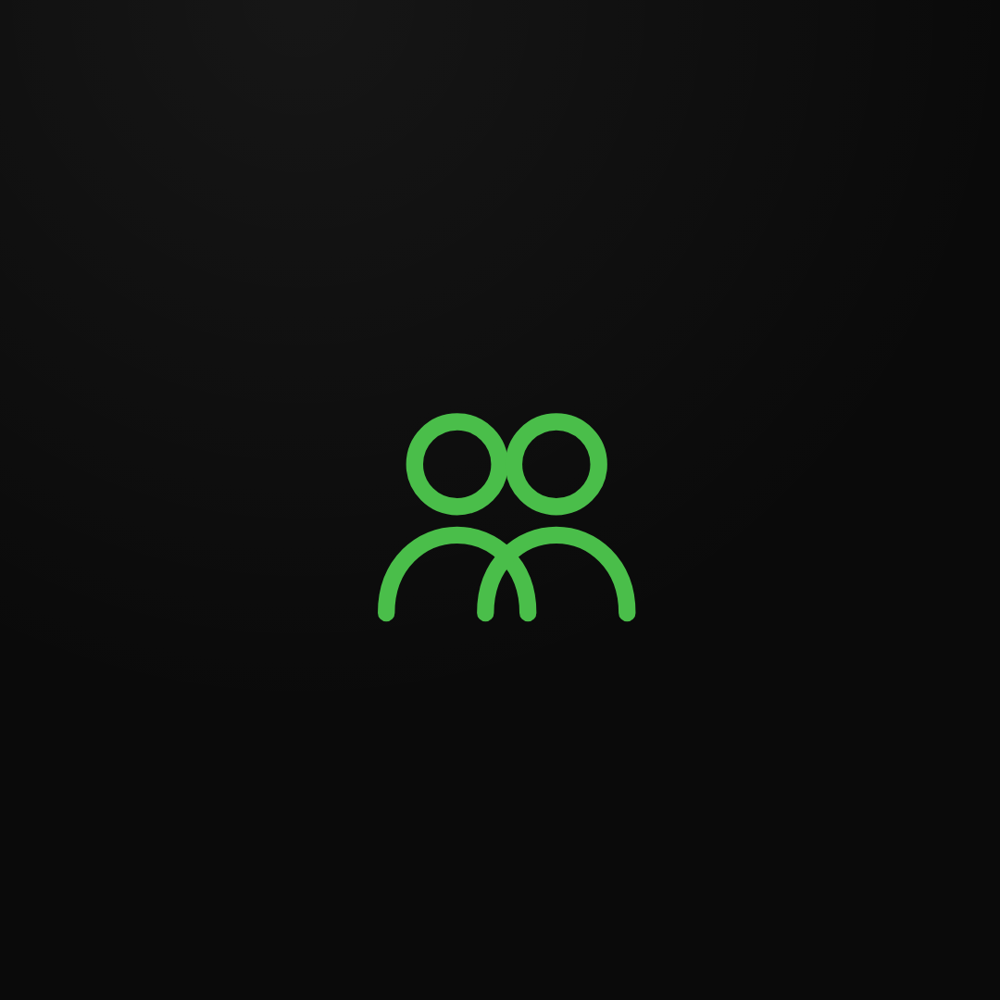
surge-wm-ig-highlight-5-team.pngInstagram (Surge) — Story Highlight cover1080x1080px · Add to a Highlight › Edit › cover. Instagram shows the centre circle only.
surge-wm-ig-highlight-6-chart.pngInstagram (Surge) — Story Highlight cover1080x1080px · Add to a Highlight › Edit › cover. Instagram shows the centre circle only.